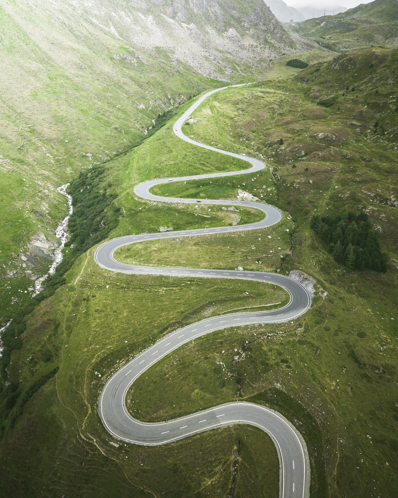

HI!
I am Kadri Shola, mother of three wonderful children. There is also a German Shepherd in the family Nelle and a fluffy-tailed cat KitiI have been taking photos as a hobby for years. The first camera was, as I remember Olympus which was always with me. When I focus on what is around me, I could stop often and eternal moments, busy streets, people, nature, lives... I love nature and naturalness, which is reflected in my photos. A person is most balanced when he is natural. Being natural includes honesty, authenticity and responsibility. Generosity and abundance, beauty and suffering, everything that nature offers us by example. Everything that can be found in nature is also found in us. The world is full of wonders. Just like we are all one big miracle here on this little earth. And we are all beautiful as we were born into this world. We all have our own story. It's wonderful to capture memorable moments. Each photographed photo has its own story, which begins and ends. At the moment, I use a Canon 5D Mark III for my camera, and for lens, I use the most versatile and powerful Canon EF 24-105 mm 1:4 L IS USM, which comes with a good-sized stand and is capable of good quality portraits and landscape photos.As a second lens, I use a telezoom lens EF 70-200 mm 1:4 L USM


A long and winding road to becoming a media professional.
When I finished college in 1997 in Tallinn, Estonia, I was so sure about where I wanted to go to university. It was Tallinn Art School's orientation to the Graphic field. Even though I went to preparatory training and after three attempts to get in, I didn't get into school and because of my life situation, I had to go to work and the idea of learning then was somehow forgotten and life went on and a son was born in the family.
MOVE TO FINLAND
In 2008, I moved to Finland, which was one of the biggest decisions in my life. During that time, however, the education options were divided into nursing education because there are always jobs in that profession. During schooling, two more children were born into the family. I finished the training as a nurse with commendable results. I have done significant and important work, but all that time I was still in my heart to create art, play with colors, and study what I have dreamed about years ago.